Linear regression is a machine learning model used to predict a continuous outcome variable based on input predictor variable(s). It does this by fitting a straight line (sometimes known as the line of best fit or regression line) to the data that minimizes the difference between predicted and expected values.
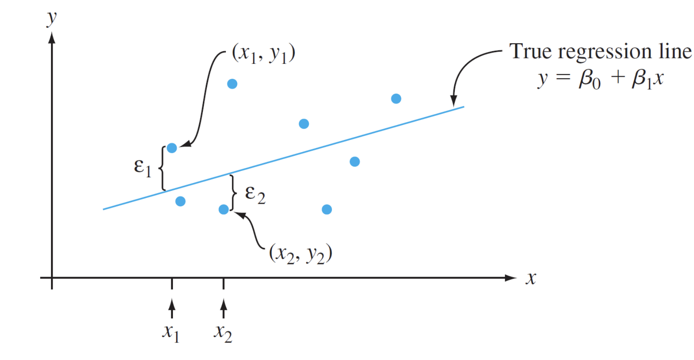
Linear regression is easy to understand when it models the relationship between only two variables.
First, linear regression with only two variables will be explained to make multiple linear regression easier to understand.
The equation for a linear regression on 2 variables is y = ax + b.
The variance of the true regression line determines the extent that each normal curve of Y values for a given x-value spreads about the true regression line.
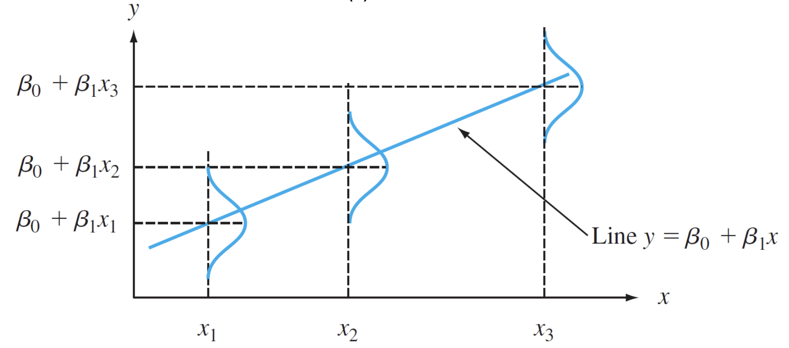
A smaller variance means that observations almost always fall close to the regression line. However, the true regression line for a population and the true
variance of the line cannot be known. Instead, we can estimate these parameters using the sample of data we have. This is how we will create a line of best fit using Least Squares Linear Regression.
A line will give the best fit if the sum of the squared vertical distances (deviations) from the observations to the line is as small as possible. Essentially, we want to minimize
the black vertical lines in the image below so the points are as close to the red regression line as possible. This type of regression is known as ordinary least squares or OLS regression.
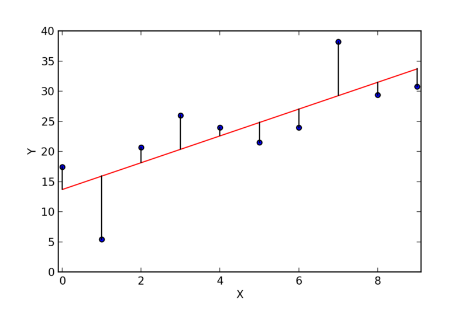
The formula for the sum of squared deviations is:
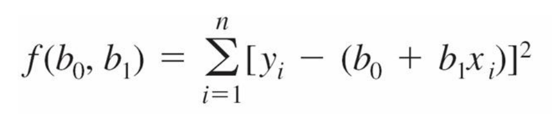
The linear regression model minimizes this value by taking partial derivatives with respect to b0 and b1. If you are familiar with univariate calculus, this basically means setting the derivative equal to 0 to find a minimum value. Then, the following equations are solved:
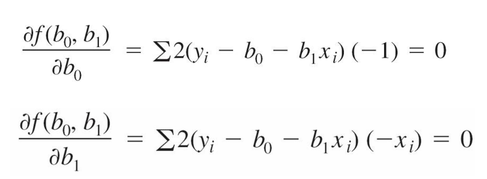
The estimate of the slope will equal:
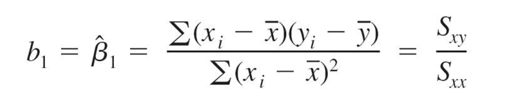
The estimate of the intercept will equal:
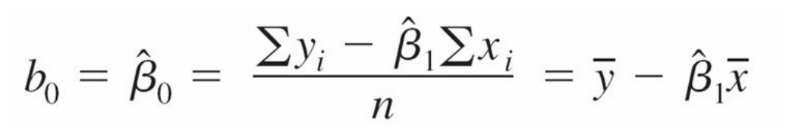
Multiple linear regression is used to predict the value of a response variable using multiple explanatory variables. The equation for multiple linear regression (MLS) is as follows:
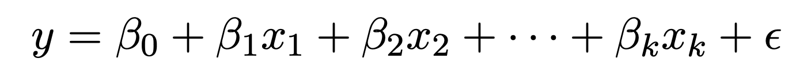
Instead of a regression line, MLS will actually fit a regression plane since there are more than 2 dimensions. The following image shows an example of a regression model E(y) with two explanatory variables x1 and x2.
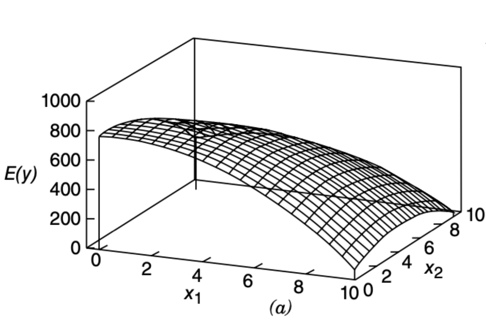
If you are familiar with linear algebra, a multiple regression model can also be written using matrix multiplication with the following matrices:
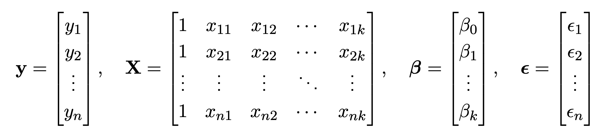
The equation would then be:
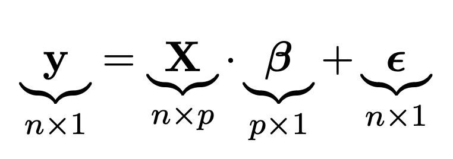
P = k+1 and is the number of parameters in the model, while k is the number of predictors.
Just like in OLS regression, least-squares can also be used in multiple regression by minimizing the sum of the squared
distances from each observation to the regression plane using the following formula:
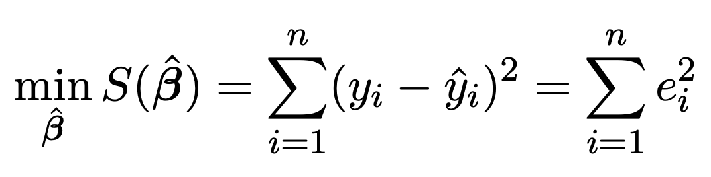
When there are only two explanatory variables, this would look like minimizing the black vertical lines in the following image:
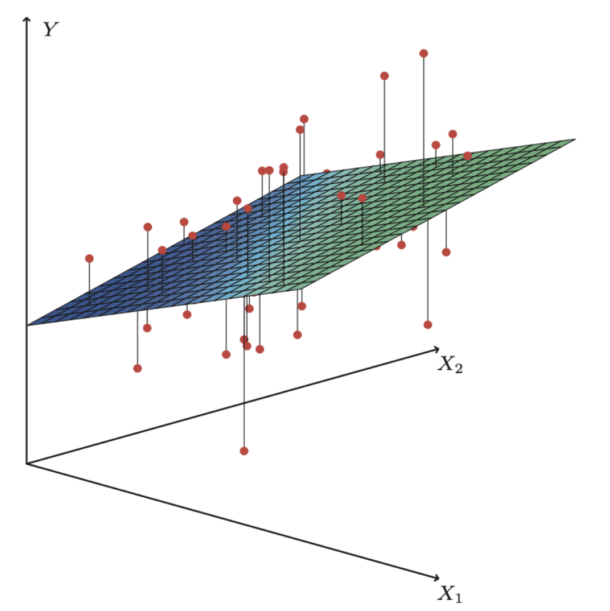
First, you should ensure that the data has a linear relationship by viewing scatter plots. There are a few other conditions that must be checked as well. In AP Statistics, these are often described with the LINEaR acronym (the a stands for and):
Now we will run a linear regression in Google Colab using an example from Scikit-learn 3 , but you can follow along using another coding platform.
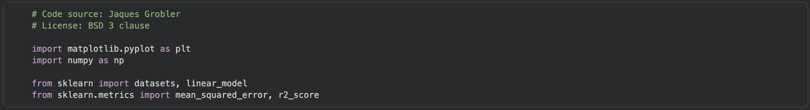
First, we import the necessary packages. Matplotlib pyplot is a helpful tool for creating graphs and numpy is an open source library for computing. We will also import Scikit-learn’s datasets and linear models, in addition to evaluation metrics (mean squared error and r-squared).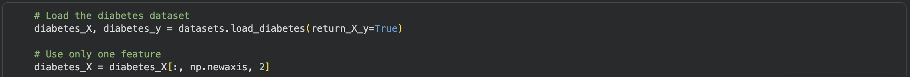
Next, we will load the diabetes dataset into two arrays. The diabetes_X array will contain the features and diabetes_y will contain the target variable. The dataset contains 10 baseline features, including age, sex, BMI, blood pressure, and blood serum measurements from 442 diabetes patients. The response variable we want to predict is a quantitative measure of disease progression one year after the baseline measurements.4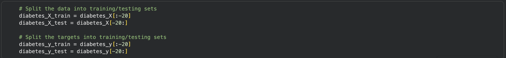
We will now split the dataset into training and test sets. The test set contains the last 20 observations in the dataset, and the training set contains all other observations. Here, we manually split the dataset into the training and test sets, but note that you can also use the train_test_split function (as in the Logistic Regression example).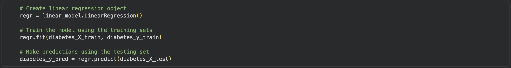
Next, we will create the linear regression object, regr, and fit it to the training data using regr.fit. Then we will make predictions on the test data and store these predictions in diabetes_y_pred.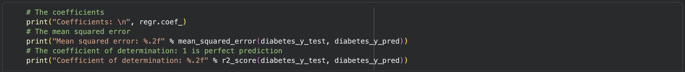
To assess the model, we will print out the regression coefficients, mean squared error, and coefficient of determination. If everything ran correctly, you should get an r-squared value of 0.47. This means that only 47% of the variation in the disease progression measurement is explained by the variable we chose.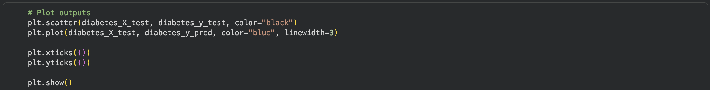
Finally, we can display the results of the linear regression showing the regression line and actual values for the test set.We can use the same dataset to run a multiple linear regression using the following steps:
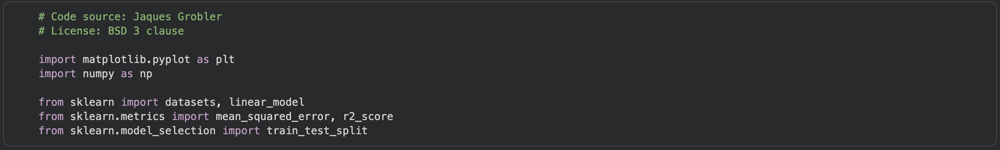
First, import the necessary packages. Most are the same as the previous linear regression, but we added the train_test_split function to make splitting the data into training and test sets simpler.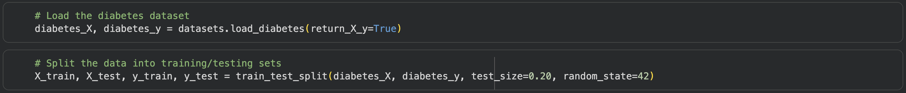
We load the data into two arrays, diabetes_X and diabetes_y. X contains the explanatory variables and y contains the response variable. Then we split these arrays into training and testing sets using the train_test_split function. The test set will contain 20% of the data as defined by the test_size parameter. The random_state parameter ensures that the train-test split will be the same each time this code is run.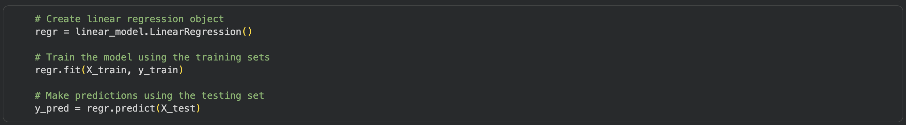
Next, create an object, regr, to initialize the regression model. Fit the model to the training data using regr.fit. Make predictions on the test set using regr.predict and store in y_pred.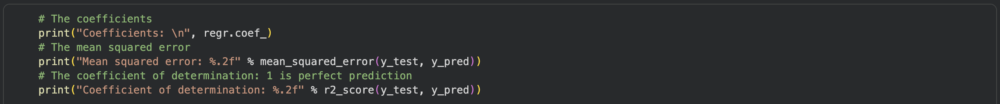
Finally, we will evaluate our model by the mean squared error and r-squared value. The printed r-squared value should be 0.45, which indicates that only 45% of the variance in the disease progression measurement is explained by all 10 explanatory variables.Linear regression is helpful for predicting the value of a numerical response variable based on one or more explanatory variables. Some specific applications are: